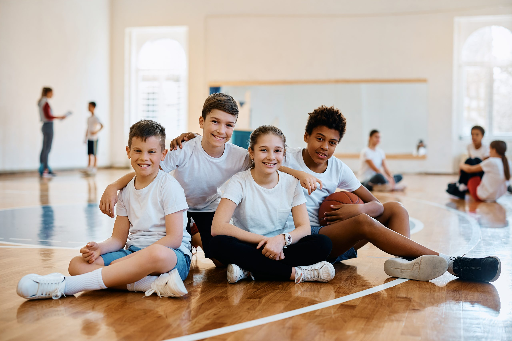
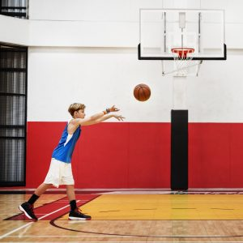
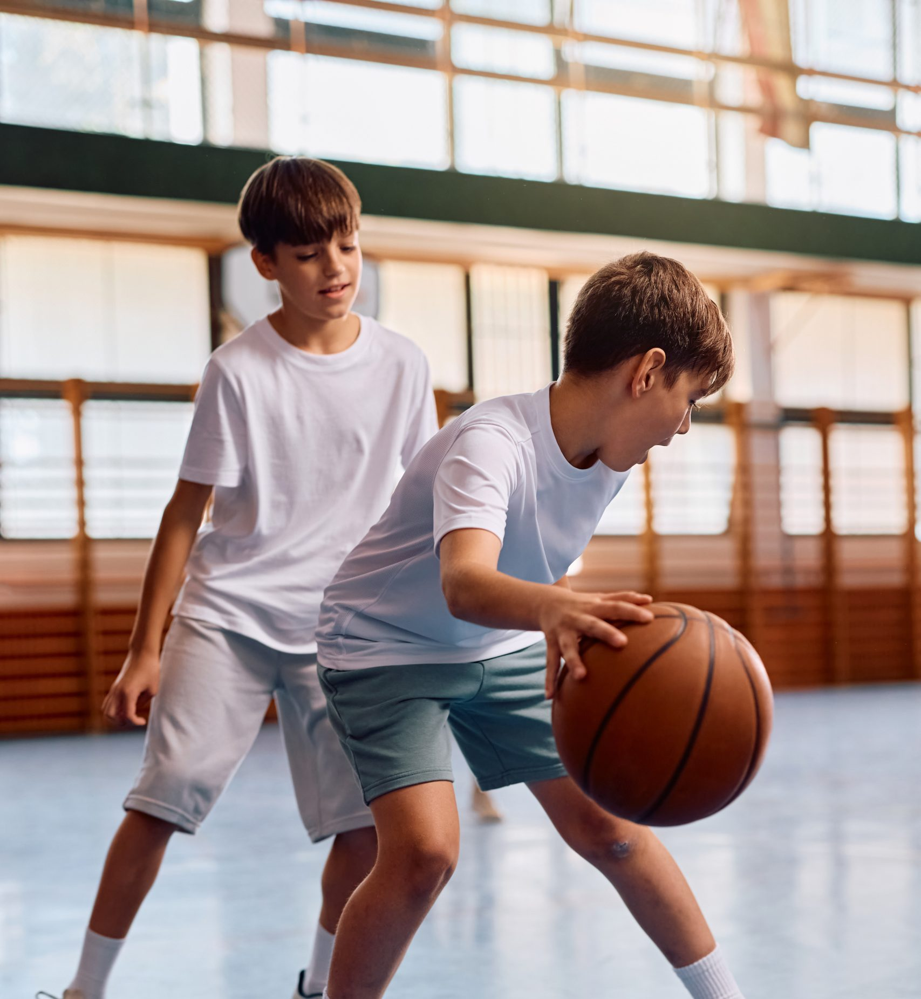

Ziel des Projekts ist es, die leer stehende Sporthalle am Südpark in Erfurt zu sanieren und für den Kinder- und Jugendsport wieder zugänglich zu machen.
Der Löwenpark wird ein offener Treffpunkt für Kinder und Jugendliche aus der ganzen Stadt. Aufbauend auf eine moderne soziale Sportidee finden jeden Tag offene, kostenlose Sportangebote statt. Zugleich eröffnen sich für die Kinder und Jugendlichen neue Perspektiven durch den Austausch mit jugendlichen Leistungssportlern und Basketball-Profis, die als nahbare Vorbilder eine wertvolle Inspiration darstellen.
Der Löwenpark Erfurt wird als moderne Trainings- und Spielhalle dem Erfurter Basketball-Nachwuchs zur Verfügung gestellt. Damit werden die städtischen Hallenkapazitäten für die Breitensportvereine BC Erfurt und USV Erfurt erweitert und neue Möglichkeiten für die leistungssportlichen Angebote des Basketball Löwen e.V. geschaffen.
Mehr als 1.000 Kinder werden dann optimale Bedingungen in einer modern ausgestatteten, energieeffizienten Trainingshalle haben.
Darüber hinaus ist der Löwenpark Erfurt der Ort für die sportbezogene Jugendsozialarbeit im Rahmen der BasKIDball und SPORT VERNETZT Standorte in Erfurt.
